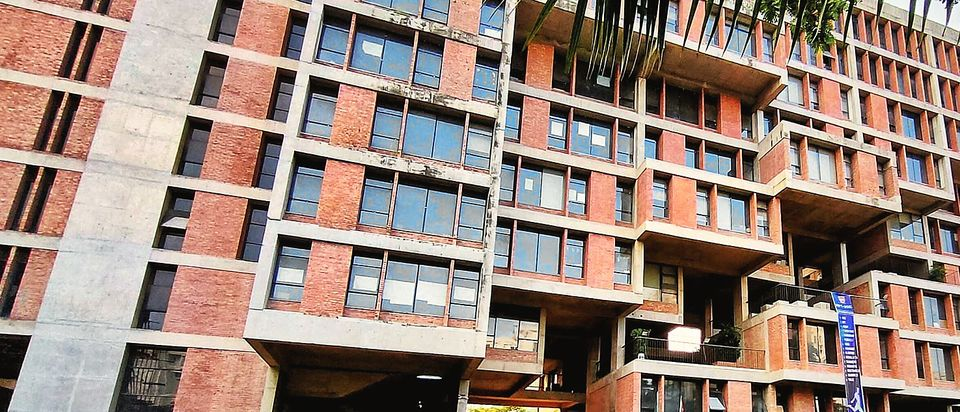
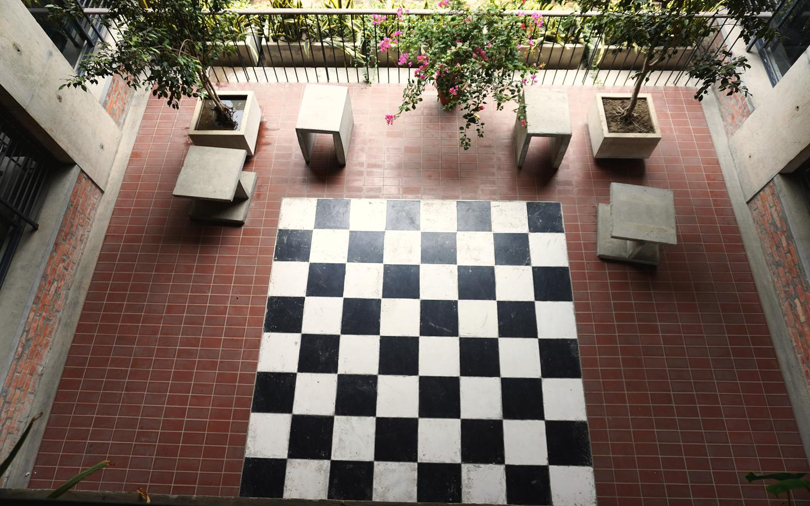
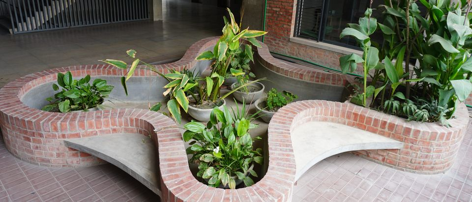
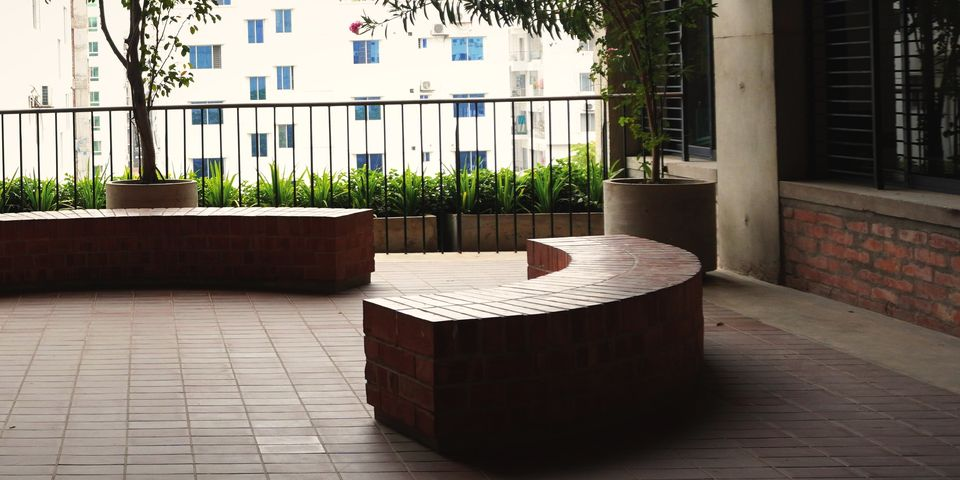

An English-medium day school in Bashundhara, Playgroup to A Level.
The Playpen School is a day school: every child goes home in the afternoon. Since July 2018 it has had its own building of ten storeys, and a child can go from Playgroup to Class XII without changing school.
The building from the field, May 2023
The school in five facts
- Curriculum
- Cambridge O Level, AS and A Level
- Classes
- Playgroup to Class XII, in four sections
- Campus
- One building of ten storeys, in use since 19 July 2018
- A Level since
- 2013
- Founded
- 1977†
Four sections, Elementary, Junior, Middle and Senior, in one building, and a school year of two semesters with a written examination at the end of each.
How the four stages fit together
† From the school's own pages, September 2026. The founding year is being confirmed with the school.
Where to read more.
Each page answers one question: how long the school has been here, who runs it, what the building holds, how children are kept safe, what the rules are, and how to apply to teach here.
-
-
-

-

- Policies The code of conduct, attendance, uniform, the library and the school bus, summarised from the school's own pages. The rules in one place
-

Pick your child's class and see the Teacher-in-Charge, the Vice Principal and the line to call.
Find your child's classHow to check us.
Three figures from the school's own records, and the four pages where the evidence sits.
- 67 per cent of O Level grades were A* or A in the May to June 2026 session
- Since 2020 a Cambridge exam venue, approved by the British Council: students sit O Level and A Level in the school's own hall
- 7 out of 7 subjects at grade A for the school's first O Level candidate, in 2003
Where the evidence sits
Every year, Playpen students receive The Daily Star Awards: for six or more A grades at O Level, and for three or more A grades at A Level.
From the school's results summary for the May to June 2026 exam session, and the school's own pages, September 2026.
What the school sets out to do.
To realise their full potential, the school says, children need a well-balanced programme in a creative learning environment.
It is essential that children understand their own history and culture, as well as appreciate the traditions of other people and places.
They must also have a firm grasp of language, as a means of communication, and be equipped with an education that can be utilized in everyday life.
The four goals
- Global citizens
- Students learn the skills they need to meet the challenges of being citizens of the 21st century.
- Rights and democracy
- Students come to know human rights, and to understand how democracy works.
- Economic life
- Students are able to move forward and take a successful part in economic activity.
- A society that reasons
- Students help to build a society that thinks logically and analyses.
From the school's statement of mission, vision and valuescurrent site (opens in a new tab). The four goals are summarised from the same statement.
Where next?
New families
Current parents
Admissions
Come and see the school.
Call the admissions line for your child's section first; the office confirms the day. Or book a visit.